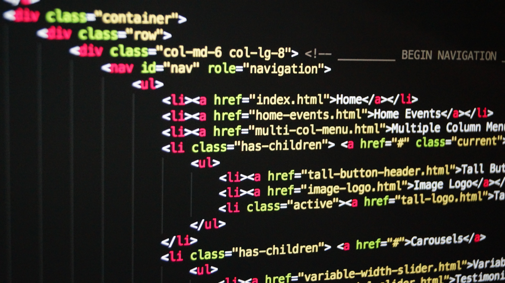
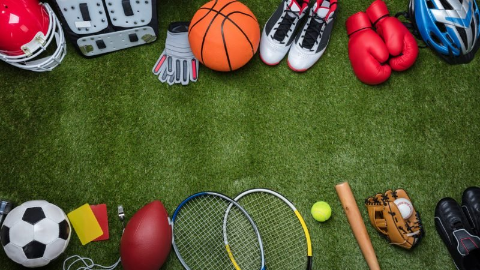

Naše radionice
Uvod u programiranje
Ako ste zainteresirani za programiranje robota i uređaja koje
svakodnevno koristimo u kućanstvu, ova radionica je upravo za vas.
Kroz razne igre i mozgalice, uči ćemo u svijet programiranja na
potpuno nov i jedinstven način. Pomoću tzv. blok programiranja,
savladat ćemo osnove na kojima se temelji računalno programiranje
aplikacija koje svakodnevno koristimo.
Prikaži više
Radionica Uvod u programiranje namijenjena je svim budućim
programerima i entuzijastima koji vole učiti nešto novo. Pomoću
blokova, isprogramirat ćemo razne zanimljive aplikacije i uvesti vas
u svijet programiranja. Također, uz programiranje, radionicu ćemo
svaki puta nadopunjavati problemima koje polaznici imaju sa svojim
osobnim računalima te na taj način vršiti popravke bez dodatnog
ulaganja. Naučit ćemo i koji su to osnovni dijelovi svakog računala,
kako instalirati operacijski sustav Windows i odgovoriti na sva
dodatna pitanja polaznika.
Cilj radionice nam je polaznicima pružiti određenu dozu zabave uz
puno novog naučenog sadržaja.
Uvod u izradu web stranica

Ukoliko biste sami željeli izrađivati web stranice, ova radionica je
za vas. Kroz HTML5 i CSS3 naučit ćete osnove web programiranja i
postupak izrade web stranica uz višestruko nagrađivanog predavača
Prikaži više
Radionica Uvod u izradu web stranica je namijenjena svima
onima koji žele ući u svijet web programiranja. Prvi korak svakog
web programera je učenja HTML-a i CSS-a pa je samim time naglasak
radionice na izučavanju tih dviju tehnologija. Radionica je
konceptuirana na način da učenici uče na temelju praktičnih primjera
te na taj način što bolje usvoje gradivo.
Cilj radionice je pružiti učenicima fundamentalna znanja HTML-a i
CSS-a na temelju kojih oni mogu samostalno nastaviti učenje te na
taj način napredovati.
Osnove računalne obrade fotografija

Ako ste ikada htjeli izraditi svoj logo, naslovnu slike neke
stranice, urediti fotografiju ili možda samo još jedan hobi onda je
ovo radionica za vas!
Prikaži više
Radionica Osnove računalne obrade fotografija namijenjena
je svima onima koji bi htjeli znati više o obradi fotografije ili
napraviti nešto novo iz ničega. U ovoj radionici naučiti ćete kako
se snalaziti u programu GIMP te steći potrebno razumijevanje i
podlogu znanja koja će vam omogućiti daljnje samostalno usavršavanje
u tom području.
Cilj radionice je naravno, steći osnovno znanje o programu na
zabavan i poseban način.
Čaraonica

Radionica u kojoj nam je glavni motiv mašta pomoću koje ćemo crtati,
pisati, bojati, izrađivati razni nakit…
Prikaži više
Radionica Čaraonica namijenjena je za sve koji bi željeli
svoju maštu pretvoriti u nešto stvarno. Kroz radionicu provest ćemo
vas kroz puteve u kojima ćemo svoje maštarije pretvoriti u
stvarnost. To ćemo ostvariti na način da svoje vrijeme provedemo
izrađujući ručne radove (crtanje, pisanje, bojanje, izrada
nakita..), smišljajući razne priče, a time možda i probudimo malu
zvijezdu u vama.
Cilj radionice je potaknuti djecu na razvijanje imaginacije,
razmišljanje i upoznavanje sebe samih.
Sportiva pozitiva

Radionica u kojoj učenici kroz razne sportove, timskom igrom i
suradnjom stječu uvid u bit zajedništva i timskoga rada. Ukoliko
ljetne i sumorne dane želite skratiti sa dobrom igrom u još boljem
društvu, ova radionica je baš za vas. Nogomet, odbojka ili pak nešto
treće? Izbor je isključivo na vama.
Prikaži više
Namijenjena je za sve one koji se žele okušati u raznim sportovima
kao što su nogomet, odbojka, rukomet, košarka i slično. Radionica se
temelji na raznim tjelovježbama i igrama, sve na temelju dogovora s
učenicima.
Cilj radionice je zainteresirati učenike za ozbiljnije bavljenje
pojedinim sportom te ih potaknuti na samostalno vježbanje kod kuće
kroz zabavu, smijeh i razne nagrade.